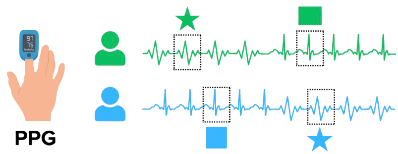
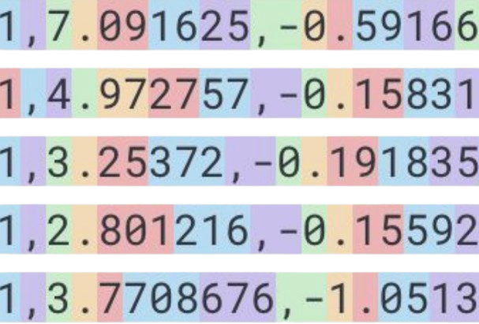
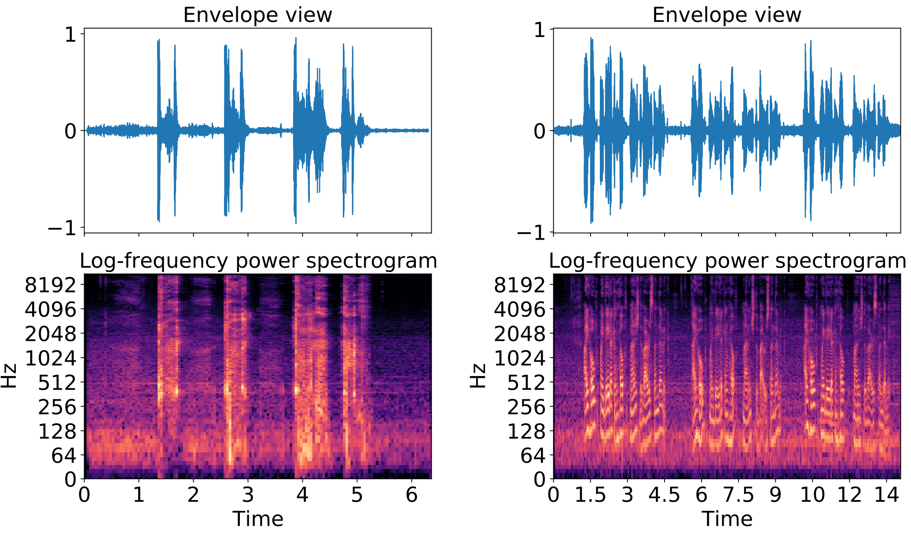
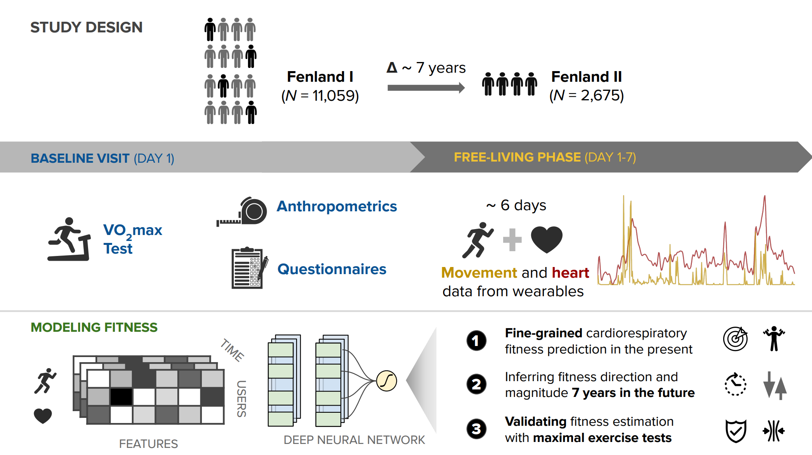
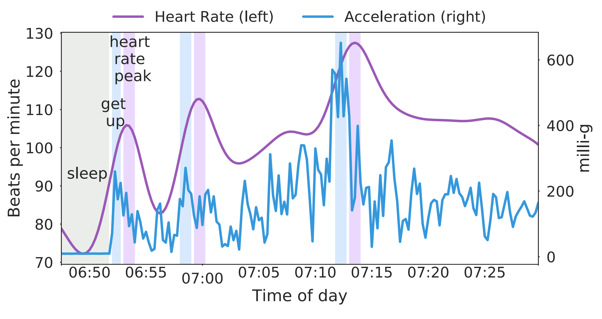
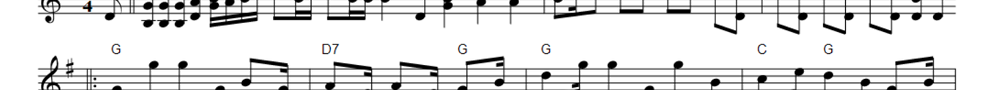

WEQA: Wearable hEalth Question Answering with Query-Adaptive Agentic Reasoning
Yuwei Zhang, Tong Xia, Bianca Emmerich, Yu Yvonne Wu, Dimitris Spathis, Xin Liu, Daniel McDuff, Cecilia Mascolo
I am a research scientist at Google and a visiting academic at the University of Cambridge, focusing on building foundation models and adaptive agents for health. My work bridges the gap between fundamental research and real-world application, developing models that are currently used by millions of people worldwide. I am particularly focused on the following areas:
Previously, I was a senior research scientist at Nokia Bell Labs, leading efforts in AI for multimodal health. Before that, I completed a PhD in Computer Science at the University of Cambridge working with Prof. Cecilia Mascolo. During my studies, I was fortunate to work at Microsoft Research, Telefonica Research, and Ocado. I also helped start COVID-19 Sounds, one of the largest studies in audio AI for health.
My research has been published in top venues in artificial intelligence, AI for health, and human-centered signal processing, while recent projects have been featured in international media such as the New York Times, BBC, CNN, Guardian, Washington Post, Forbes, and Financial Times (see more in Press).

Generative models trained on up to one trillion minutes of wearable sensor data, capable of handling incomplete multimodal inputs.

The first open foundation model for biosignals (PPG) pre-trained on 57,000 hours of data, published at ICLR 2025.

Analyzing the pitfalls of representing and tokenizing temporal data for Large Language Models, particularly from sources like mobile sensors or medical records.

COVID-19 Sounds analyzed respiratory recordings for digital respiratory screening. Released large-scale datasets at NeurIPS 2021.

Models that predict VO2max/cardio fitness using wearable sensor data in large cohorts, published in Nature Digital Medicine.

We developed some of the first pre-trained models using self-supervised objectives and applied them to various health-related downstream tasks.
The recently announced Health Guardian tool includes 'blood pressure' and 'insulin resistance trends' and is based on our SensorFM and other models. You can read more here.
We released SensorFM, a foundation model trained on the largest personal health dataset. You can read more here.
In collaboration with Cambridge, we released WEQA: Wearable hEalth Question Answering with Query-Adaptive Agentic Reasoning.
We published a paper describing the heart sensing model and system that runs on the Pixel Watch.
We announced Google Health, the Google Health Coach, and a new screenless device. You can read more here.
Invited talk at the Machine Intelligence for Health Conference (MI4H), Coventry, UK.
A new review on AI fairness in personal and mobile sensing, covering the literature from the past 8 years. You can read more here.
Invited talk at the RADAR-base Symposium by Wellcome Trust & King’s College London.
We released a perspective piece arguing that Wearable Foundation Models Should Go Beyond Static Encoders.
Invited lecture at Cambridge University on Foundation Models for Personal Health Signals.
Serving on the Advisory Committee for the Learning from Time Series for Health Workshop at NeurIPS 2025.
Invited talk at AI4Health Industry Day 2025 @ Imperial.
We released a review paper on biosignal foundation models.
We released the paper for Large Sensor Model 2 (LSM-2), a foundation model trained on 40M hours of wearable data.
We are organizing a new workshop EvalComp @ Ubicomp'25 focusing on the future of evals. Consider submitting your relevant work!
Time2Lang, a new method to use timeseries foundation models with LLMs, was accepted at CHIL 2025. I also gave an invited talk at Singapore Management University on foundation models for personal health.
Our work on model averaging for label noise mitigation was published in Scientific Reports.
🦜 PaPaGei was accepted at ICLR 2025! Our music work was also featured in a Guardian article.
Our 🦜 PaPaGei work received the best paper award at the NeurIPS’24 workshop on Time Series in the Age of Large Models. I also gave an invited lecture at the Aristotle University of Thessaloniki on the topic of foundation models for personal health. Our SoundCollage paper was accepted at ICASSP'25.
I joined Google in London, working within the Consumer Health Research team.
We released 🦜 PaPaGei, the first open foundation model for biosignals (PPG). You can read more here. I was also interviewed by Bloomberg for a newsletter about VO2max.
I was a panel speaker at Cambridge Tech Week. You can watch the segment on Youtube.
StatioCL, a new non-stationary self-supervised model for timeseries, was accepted to CIKM 2024.
Our work on how Large Language Models struggle with temporal data was published in JAMIA, and was covered by Techcrunch and LG AI Research. You can read more in this post.
Our work on how Self-Supervised Learning improves fairness was accepted at KDD 2024. We released the paper, code, and a project website. I was also interviewed by Runner's World magazine for a feature article about VO2max - you can read more here.
My MedAI talk from earlier this year is now available on Youtube.
I was interviewed by the New York Times for an article on cardio fitness and wearables. Also launched a new Short Papers section at IEEE Pervasive journal - consider submitting your works! In addition, my first patent from a few years ago became public; you can read more here.
The collection of accepted papers at the Human-Centric Representation Learning workshop is available as an Arxiv index.
Co-chaired the Human-Centric Representation Learning workshop at AAAI 2024 in Vancouver, with a great set of papers and keynotes - you can read some highlights of the day at AIhub.org. I also gave an invited keynote at the Health Intelligence workshop of the same conference (here are the slides from the talk).
Gave an invited talk at Cambridge Biomedical Campus as part of the MedAI seminar series.
I authored a corporate blogpost describing our team's recent research. I also joined the editorial board of the IEEE Pervasive Computing journal.
I have published over 60 papers in top-tier venues including NeurIPS, ICLR, KDD, Nature Digital Medicine, UbiComp, and ICASSP. You can also see the full list on Google Scholar.
Yuwei Zhang, Tong Xia, Bianca Emmerich, Yu Yvonne Wu, Dimitris Spathis, Xin Liu, Daniel McDuff, Cecilia Mascolo
Girish Narayanswamy, Maxwell A. Xu, A. Ali Heydari, Samy Abdel-Ghaffar, Marius Guerard, Kara Vaillancourt, Zhihan Zhang, Jake Garrison, Levi Albuquerque, Dimitris Spathis, Hong Yu, Hamid Palangi, Xuhai "Orson" Xu, David G. T. Barrett, Joseph Breda, Jed McGiffin, Yubin Kim, Yuwei Zhang, Naghmeh Rezaei, Samuel Solomon, Karan Ahuja, Tim Althoff, Jake Sunshine, Ming-Zher Poh, Benjamin Yetton, Ari Winbush, Nicholas B. Allen, James M. Rehg, Isaac Galatzer-Levy, Yun Liu, John Hernandez, Anupam Pathak, Conor Heneghan, Yuzhe Yang, Ahmed A. Metwally, Pushmeet Kohli, Mark Malhotra, Shwetak Patel, Xin Liu, Daniel McDuff
Daniel Roggen, Megan Walker, Yojan Patel, Shyam Tailor, Dimitris Spathis, Matt Wimmer, Brennan Garrett, Dan Howe, Abhinuv Pitale, Hamed Vavadi, Tien Le, Steve Diamond, Oleksiy Vyalov, Vik Sharma, Pete Richards, Tracy Giest, Erika Siegel, Tuan Phan, Sam Mravca, Derrick Vickers, Benjamin Stone, Katarina Vukosavljevic, Justin Phillips, YongSuk Cho, Stefanie Hollidge, Antony Siahaan, Soren Brage, Shwetak Patel, Robert Harle
Yu Yvonne Wu, Yuwei Zhang, Hyungjun Yoon, Ting Dang, Dimitris Spathis, Tong Xia, Qiang Yang, Jing Han, Dong Ma, Sung-Ju Lee, Cecilia Mascolo
Sofia Yfantidou, Marios Constantinides, Dimitris Spathis, Athena Vakali, Daniele Quercia, Fahim Kawsar
Hung Manh Pham, Matthew Yiwen Ho, Yiming Zhang, Dimitris Spathis, Aaqib Saeed, Dong Ma
Xiao Gu, Yuxuan Shu, Jinpei Han, Yuxuan Liu, Zhangdaihong Liu, James Anibal, Veer Sangha, Edward Phillips, Bradley Segal, Hang Yuan, Fenglin Liu, Kim Branson, Patrick Schwab, Danielle Belgrave, Lei Clifton, Dimitris Spathis, Vasileios Lampos, A Aldo Faisal, David A Clifton
Marios Constantinides, Dimitris Spathis, Sofia Yfantidou
Arvind Pillai, Dimitris Spathis, Subigya Nepal, Amanda C Collins, Daniel M Mackin, Michael V Heinz, Tess Z Griffin, Nicholas C Jacobson, Andrew Campbell
Conference on Health, Inference, and Learning (CHIL 2025)
Aaqib Saeed, Dimitris Spathis, Jungwoo Oh, Edward Choi, Ali Etemad
Scientific Reports 15 (1), 4276
Maxwell A. Xu, Girish Narayanswamy, Kumar Ayush, Dimitris Spathis..., Xin Liu, Daniel McDuff
Arvind Pillai, Dimitris Spathis, Fahim Kawsar, Mohammad Malekzadeh
International Conference on Learning Representations (ICLR'25) Workshop Best Paper Award (Top 1%)
Ryuhaerang Choi, Soumyajit Chatterjee, Dimitris Spathis, Sung-Ju Lee, Fahim Kawsar, Mohammad Malekzadeh
IEEE International Conference on Acoustics, Speech and Signal Processing (ICASSP'25)
Aaqib Saeed, Dimitris Spathis, Jungwoo Oh, Edward Choi, Ali Etemad
Ting Dang, Shkurta Gashi, Dimitris Spathis, Alexander Hoelzemann
ACM Intl. Joint Conf. Pervasive and Ubiquitous Computing (Ubicomp 2024)
Lakmal Meegahapola, Dimitris Spathis, Marios Constantinides, Han Zhang, Sofia Yfantidou, Niels van Berkel, Anind K. Dey
ACM Intl. Joint Conf. Pervasive and Ubiquitous Computing (Ubicomp 2024)
Dimitris Spathis, Fahim Kawsar
Sofia Yfantidou, Dimitris Spathis, Marios Constantinides, Athena Vakali, Daniele Quercia, Fahim Kawsar
International Conference on Knowledge Discovery and Data Mining (KDD'24)
Shohreh Deldari, Dimitris Spathis, Mohammad Malekzadeh, Fahim Kawsar, Flora Salim, Akhil Mathur
ACM Conference on Web Search and Data Mining (WSDM'24)
Chi Ian Tang, Lorena Qendro, Dimitris Spathis, Fahim Kawsar, Cecilia Mascolo, Akhil Mathur
IEEE/CVF Winter Conference on Applications of Computer Vision (WACV'24),
Yu Wu, Ting Dang, Dimitris Spathis, Hong Jia, Cecilia Mascolo
ACM International Conference on Information and Knowledge Management (CIKM'24)
Julia Romero, Andrea Ferlini, Dimitris Spathis, Ting Dang, Katayoun Farrahi, Fahim Kawsar, Alessandro Montanari
Intl. Workshop on Mobile Computing Systems and Applications (HotMobile'24),
Chi Ian Tang, Lorena Qendro, Dimitris Spathis, Fahim Kawsar, Cecilia Mascolo, Akhil Mathur
AAAI Human-centric Representation Learning workshop (HCRL @ AAAI'24),
Sofia Yfantidou, Marios Constantinides, Dimitris Spathis, Athena Vakali, Daniele Quercia, Fahim Kawsar
ACM International Conference on Mobile Human-Computer Interaction (MobileHCI'23),
Ting Dang, Dimitris Spathis, Abhirup Ghosh, Cecilia Mascolo
Yu Wu, Dimitris Spathis, Hong Jia, Ignacio Perez-Pozuelo, Tomas I Gonzales, Soren Brage, Nicholas Wareham, Cecilia Mascolo
Machine Learning for Healthcare (MLHC'23)
Ting Dang, Jing Han, Tong Xia, Erika Bondareva, Chloë Siegele-Brown, Jagmohan Chauhan, Andreas Grammenos, Dimitris Spathis, Pietro Cicuta, Cecilia Mascolo
International Conference on Knowledge Discovery and Data Mining (KDD'23)
Stefan Hegselmann, Helen Zhou, Yuyin Zhou, Jennifer Chien, Sujay Nagaraj, Neha Hulkund, Shreyas Bhave, Michael Oberst ... Dimitris Spathis, Jun Seita, Bastiaan Quast, Megan Coffee, Collin Stultz, Irene Y Chen, Shalmali Joshi, Girmaw Abebe Tadesse
Jing Han, Marco Montagna, Andreas Grammenos, Tong Xia, Erika Bondareva, Chloë Siegele-Brown, Jagmohan Chauhan, Ting Dang, Dimitris Spathis, Andres Floto, Pietro Cicuta, Cecilia Mascolo
Alican Akman, Harry Coppock, Christian Bergler, Maurice Gerczuk, Chloë Brown, Jagmohan Chauhan, Andreas Grammenos, Apinan Hasthanasombat, Dimitris Spathis, Tong Xia, Pietro Cicuta, Jing Han, Shahin Amiriparian, Alice Baird, Lukas Stappen, Sandra Ottl, Panagiotis Tzirakis, Anton Batliner, Cecilia Mascolo, Björn Wolfgang Schuller
Dimitris Spathis*, Ignacio Perez-Pozuelo*, Tomas I. Gonzales, Yu Wu, Soren Brage, Nicholas Wareham, Cecilia Mascolo (*equal contribution)
Nature Digital Medicine Altmetric Top 5% of all research outputs
Jing Han*, Tong Xia*, Dimitris Spathis, Erika Bondareva, Chloë Brown, Jagmohan Chauhan, Ting Dang, Andreas Grammenos, Apinan Hasthanasombat, Andres Floto, Pietro Cicuta, Cecilia Mascolo
Dimitris Spathis, Ignacio Perez-Pozuelo, Laia Marques-Fernandez, Cecilia Mascolo
Ignacio Perez-Pozuelo, Marius Posa, Dimitris Spathis, Kate Westgate, Nicholas Wareham, Cecilia Mascolo, Soren Brage, Joao Palotti
Ting Dang, Jing Han, Tong Xia, Dimitris Spathis, Erika Bondareva, Chloë Brown, Jagmohan Chauhan, Andreas Grammenos, Apinan Hasthanasombat, Andres Floto, Pietro Cicuta, Cecilia Mascolo
David Greenberg, Sebastian Wride, Daniel Snowden, Dimitris Spathis, Jeff Potter, Jason Rentfrow
Journal of Personality and Social Psychology Altmetric Top 5% of all research outputs
Dimitris Spathis, Stephanie Hyland
Machine Learning for Health(ML4H'22)
Yu Wu, Dimitris Spathis, Hong Jia, Ignacio Perez-Pozuelo, Tomas I Gonzales, Soren Brage, Nicholas Wareham, Cecilia Mascolo
Machine Learning for Health(ML4H'22)
Apinan Hasthanasombat, Abhirup Ghosh, Dimitris Spathis, Cecilia Mascolo
UbiComp workshop on Human Activity Sensing Corpus & Applications (HASCA @ UbiComp'22)
Tong Xia*, Dimitris Spathis*, Chloe Brown, Jagmohan Chauhan, Andreas Grammenos, Jing Han, Apinan Hasthanasombat, Erika Bondareva, Ting Dang, Andres Floto, Pietro Cicuta, Cecilia Mascolo
Neural Information Processing Systems (NeurIPS'21)
Dimitris Spathis, Ignacio Perez-Pozuelo, Soren Brage, Nicholas Wareham, Cecilia Mascolo
Conference on Health, Inference, and Learning (CHIL'21)
Jing Han, Chloë Brown*, Jagmohan Chauhan*, Andreas Grammenos*, Apinan Hasthanasombat*, Dimitris Spathis*, Tong Xia*, Pietro Cicuta, Cecilia Mascolo
International Conference on Acoustics, Speech, & Signal Processing (ICASSP'21)
Chi Ian Tang, Ignacio Perez-Pozuelo*, Dimitris Spathis*, Soren Brage, Nicholas Wareham, Cecilia Mascolo
Proc. on Interactive, Mobile, Wearable and Ubiquitous Technologies (IMWUT/Ubicomp'21)
Björn W. Schuller, ... Dimitris Spathis, Tong Xia, Pietro Cicuta, Leon J. M. Rothkrantz, Joeri Zwerts, Jelle Treep, Casper Kaandorp
Conference of the International Speech Communication Association (Interspeech'21)
Ignacio Perez-Pozuelo, Dimitris Spathis, Jordan Gifford-Moore, Jessica Morley, Josh Cowls
Benjamin Searle, Dimitris Spathis, Marios Constantinides, Daniele Quercia, Cecilia Mascolo
ACM International Conference on Mobile Human-Computer Interaction (MobileHCI'21)
Kevalee Shah, Dimitris Spathis, Chi Ian Tang, Cecilia Mascolo
Machine Learning for Health (ML4H'21)
Stefanos Laskaridis, Dimitris Spathis, Mario Almeida
ACM International Conference on Mobile Computing and Networking (MobiCom)
Ignacio Perez-Pozuelo, Dimitris Spathis, Emma Clifton, Cecilia Mascolo
Chloë Brown*, Jagmohan Chauhan*, Andreas Grammenos*, Jing Han*, Apinan Hasthanasombat*, Dimitris Spathis*, Tong Xia*, Pietro Cicuta, Cecilia Mascolo
International Conference on Knowledge Discovery and Data Mining (KDD'20) Oral presentation
Dimitris Spathis, Ignacio Perez-Pozuelo, Soren Brage, Nicholas Wareham, Cecilia Mascolo
Chi Ian Tang, Ignacio Perez-Pozuelo, Dimitris Spathis, Cecilia Mascolo
Dimitris Spathis, Sandra Servia, Katayoun Farrahi, Cecilia Mascolo, Jason Rentfrow
International Conference on Knowledge Discovery and Data Mining (KDD'19) Oral presentation (Top 6%)
Dimitris Spathis, Sandra Servia, Katayoun Farrahi, Cecilia Mascolo, Jason Rentfrow
International Conference on Pervasive Computing Technologies for Healthcare (PervasiveHealth'19)
Dimitris Spathis, Nikolaos Passalis, Anastasios Tefas
Dimitris Spathis, Nikolaos Passalis, Anastasios Tefas
Dimitris Spathis, Panayiotis Vlamos
Joan Serra, Ilias Leontiadis, Dimitris Spathis, Gianluca Stringhini, Jeremy Blackburn, Athena Vakali
Basilis Charalampakis, Dimitris Spathis, Elias Kouslis, Katia Kermanidis
Basilis Charalampakis, Dimitris Spathis, Elias Kouslis, Katia Kermanidis
International Conference on Engineering Applications of Neural Networks
Dimitris Spathis, Theofilos Mouratidis, Spyros Sioutas, Athanasios Tsakalidis
PhD thesis
MSc thesis
US20260093979A1 (filed 2025, published 2026)
US20260119980A1 (filed 2024, published 2026)
US20250209343A1 (filed 2024, published 2025)
US20250156763A1 (filed 2024, published 2025)
GB2635388A (filed 2023, published 2025)
US20240273404A1 (filed 2023, published 2024)
US20240127057A1 (filed 2022, published 2024)
Leadership & organizer roles:
Expert reviewer & advisory roles:
Program Committee Member: AAAI, IJCAI, KDD, FAccT, SIAM SDM, Sensiblend @ Ubicomp.
Reviewer: NeurIPS, ICLR, ICML, AAAI, IJCAI, KDD, CHI, Ubicomp/IMWUT, CHIL, Nature Digital Medicine, WACV, Nature Scientific Reports, ICASSP, Expert Systems with Applications, Neurocomputing, WWW/The Web Conference, Engineering Applications of Artificial Intelligence, ICWSM, and more.
I have also been a teaching assistant for the following undergraduate courses:
Over the years, I've had the privilege of supervising and closely collaborating with a talented group of researchers, both through industry internships and university PhD co-supervision. We focus on building intelligent and personalized agents for health. Here are the amazing researchers who have worked with me:
Foundation Models for Personal Health Signals
Machine
Intelligence for Health Conference (MI4H), Coventry, UK
Foundation Models for Personal Health Signals
RADAR-base
Symposium, Wellcome Trust & King’s College London, UK
Foundation Models for Personal Health
Signals
University of Cambridge, UK
AI4Health Industry Day 2025
Imperial
College London, UK
Foundation models for personal health
Singapore Management University, Singapore
The era of foundation models – AI for personal health as its ultimate use case
Aristotle University,
Thessaloniki, Greece
Evidence from industry – what are you really using AI for? (panel)
Cambridge Tech Week,
Cambridge, UK
Multimodal AI for Real-World Signals and the Role of Language
AAAI'24 Health Intelligence workshop,
Vancouver, Canada
Multimodal, data-efficient, and robust AI for real-world biosignals & the role of generative
models
Cambridge MedAI Seminar
Series, Biomedical Campus, Cambridge, UK
Multimodal AI for real-world signals – does the key to specialized models lie in
language?
Microsoft AI & Pizza talk -
Cambridge ELLIS Unit, Cambridge, UK
Human-centric AI for health signals with applications in fitness and activity
modeling
Cambridge Public Health symposium,
Cambridge, UK
Self-Supervised Learning for Health Signals
Rising Stars in AI, KAUST, Saudi Arabia
Representation learning for cardio-fitness prediction in free-living environments
King's College London, Precision Health Informatics Data Lab, London, UK
AI-powered Wearables Transforming Mobile Health
AI Summit, London Tech week, London, UK
Self-supervised learning for health signals
Feinstein Institutes of Northwell Health, New York, USA (remote)
AI to model Human Behaviour and Health
Jesus College Postgraduate Conference, virtual event,
UK
Deep sequence learning for large-scale inference of human behaviour from mobile sensor
data
MRC Epidemiology Unit, University of
Cambridge, UK
Fast, Visual and Interactive Semi-supervised Dimensionality Reduction
Facebook PhD Open House, London, UK
AI for physiological sensing, Pixel Watch & Fitbit Air: PCMag, Wired, Engadget, 9to5Google, ZDNet, Tom's Guide, The Verge, NYT Wirecutter, DC Rainmaker, Engadget, Android Authority, CNET, Men's Health, PCMag, Wired.
Large Language Models for timeseries: Techcrunch, LG AI Research.
Audio AI for COVID-19: Cambridge University (1), (2), (3), (4), BBC, The Guardian, Financial Times, The Times, Forbes, Slate, Huffington Post, DailyMail, ITV, IEEE Spectrum, TheNextWeb, STAT, EPFL, TheScientist, The Register, KDnuggets, NPR/WBUR, Psychology Today, El Pais, RAI, Corriere della Sera, Focus, DerStandard.
AI for VO2max: Cambridge University (1), (2), New York Times, Bloomberg, VentureBeat, Business Insider, Runner's World, Communications of the ACM, Daily Mirror, Bicycling Magazine, Owkin, Spektrum.de.
Data-driven music psychology: Cambridge University, The Times, Washington Post, CNN, The Telegraph, Sky News, Guardian, ITV, DailyMail, Inc., CTV, ZDF, Der Tagesspiegel, ABC.ES, ABC.AU, ELLE, Cosmopolitan, RTBF, TEDx.
Interviews: IndiaAI.gov
Non-academic things about me: I love music, both playing and listening. I am mostly into art rock and indie folk, with the occasional exception of some well-crafted pop. Although I am an accordionist by training, over the last few years I've been playing mostly piano and ukulele. In a previous life, I performed with the critically acclaimed band The Children of the Oldness (aka Kore Ydro) and recorded the album "Consortium in Amato" (listen here).
I also enjoy street photography and in particular playing with light—photography comes from Greek φως (light) and γραφή (writing), or drawing with light. A sample of my shots is on Flickr and one of my landscapes was featured in the Huffington Post.
Lastly, and perhaps most importantly, I'm always on the lookout for ways to move items from the "non-academic list" to the "academic list"—let me know if you'd like to help!
“The next big thing in technology often starts off looking like a toy”
Communitypoprefs.com is a data visualization website, where we present every pop-culture reference over the course of 5 seasons of the TV series Community.
Visualizing my favourite songs on Spotify with dimensionality reduction and anomaly detection. Data essay published in Cuepoint Magazine, Medium's premier music publication.
Text mining Game of Thrones, Harry Potter, Hunger Games and Lord of the Rings books. Data essay featured in Medium's Editor Picks.
Mobile app with face recognition, age estimation, & emotion recognition to blur kids or replace their faces with emotion-based emojis. Developed during HackZurich 2018.
Glocalne.ws was a mashup of Google News and Google Maps. Unfortunately it is now defunct due to API discontinuance.

Training neural networks on massive amounts of musical notation and literature and letting them create their own art. The essay is in Greek, but you can still see/listen to the results.